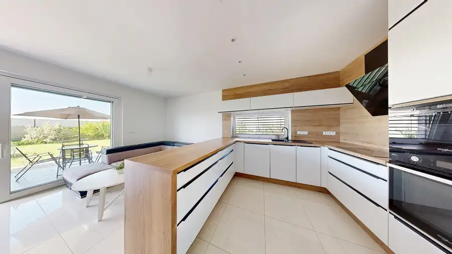
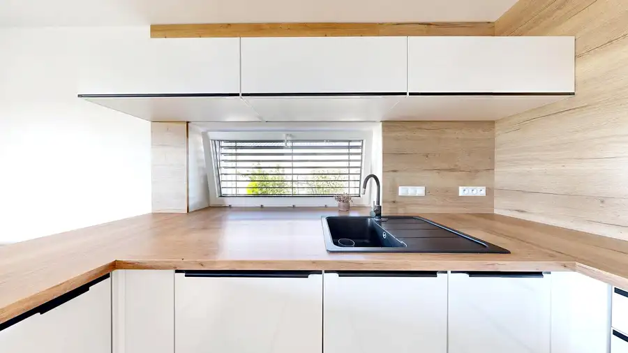
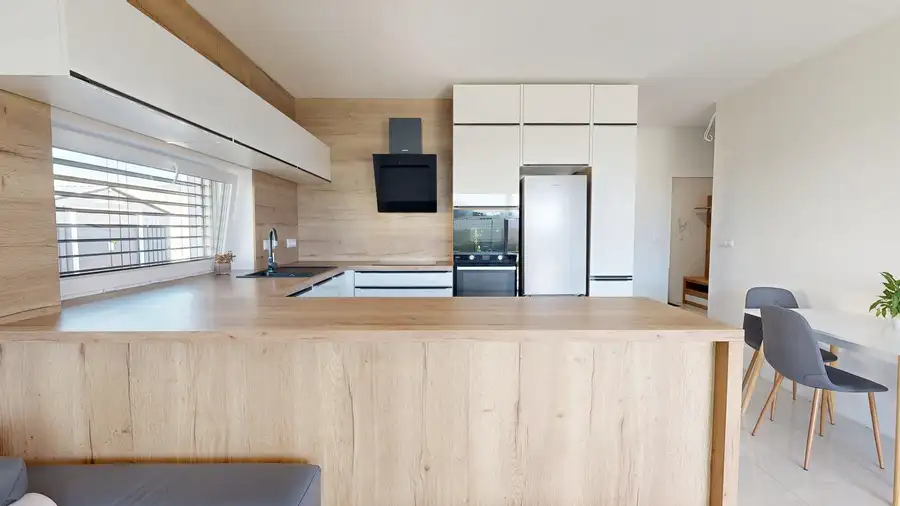
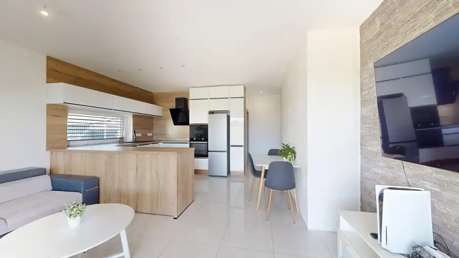
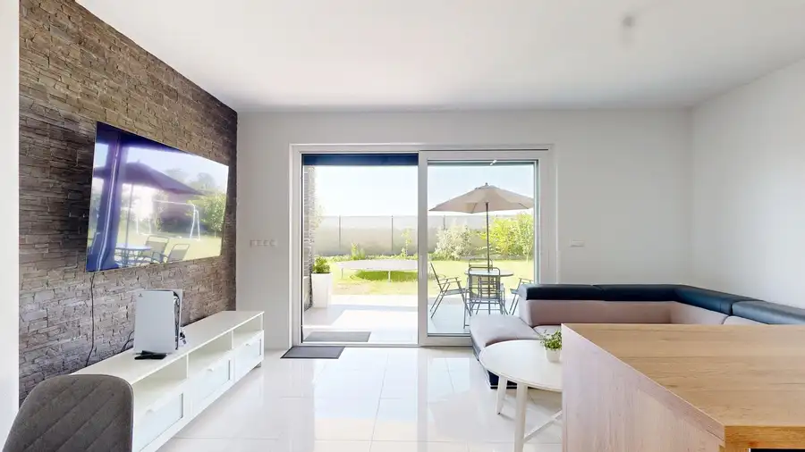
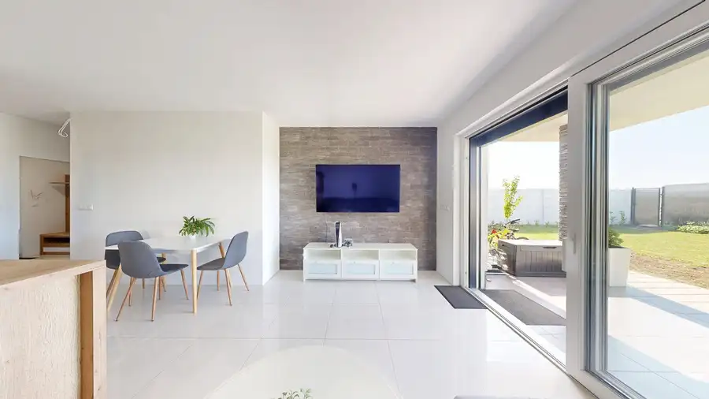

AZ. Na predaj 4-izbový moderný bungalov v Brunovciach
Brunovce






- Plocha86 m²
- StavNovostavba
- VlastníctvoOsobné
- Energetická triedaA
O nehnuteľnosti
Realitná kancelária Andel & Zachar Vám exkluzívne ponúka na predaj novostavbu moderného 4-izbového rodinného domu (typu bungalov) v tichej slepej uličke v obci Brunovce (okres Nové Mesto nad Váhom).Tento dom je ideálnou voľbou pre rodinu, ktorá hľadá pokojný vidiecky život, no zároveň vyžaduje rýchle napojenie na mestskú infraštruktúru – privádzač na diaľnicu D1 je vzdialený len pár minút.Dispozícia:Úžitková plocha domu: 86,61 m² + zastrešená vonkajšia terasa 9,50 m²Výmera pozemku: 538 m² (rovinatý, ideálny tvar pre záhradné úpravy)Počet izieb: 4 (zádverie, chodba, obývacia izba prepojená s kuchyňou, spálňa, detská izba, pracovňa, kúpeľňa - so sprchovým kútom, vaňou a WC, samostatné WC)Parkovanie: pre 2 vozidlá priamo na pozemku.Dom je postavený z poctivých materiálov s dôrazom na energetickú úspornosť:Konštrukcia: Brúsená tehla Heluz (hr. 300 mm) + zateplenie fasády 150 mm.Strecha: Betónová krytina Bramac, strop izolovaný fúkanou izoláciou (350 mm) so sadrokartónovým podhľadom. Úložný priestor v podkroví je prístupný cez výklopné schody.Okná: Plastové s izolačným trojsklom (moderné prevedenie: exteriér antracit / interiér biela) s mikroventiláciou.Kúrenie: Vodné podlahové vykurovanie napojené na plynový kondenzačný kotol.Siete: Vodovod, elektrina, plyn, odvod dažďovej vody do trativodov. Odpad je riešený samostatnou žumpou.Vonkajšie tienenie: Kompletné hliníkové rolety s elektrickým diaľkovým ovládaním (oceníte najmä v letných mesiacoch).Príprava na klimatizáciu: Dom je pripravený na osadenie klimatizačných jednotiek bez nutnosti ďalších stavebných zásahov.Príprava na kamerový systém: Zvýšená bezpečnosť pre Vašu rodinu a majetok.Lokalita:Obec Brunovce ponúka príjemné bývanie s dobrou občianskou vybavenosťou. Dom sa nachádza v novovybudovanej, slepej uličke, čo zaručuje minimálny pohyb áut a maximálne bezpečné prostredie pre deti. Strategická poloha blízko diaľnice D1 umožňuje rýchly presun smerom do Trenčína, Trnavy či Bratislavy. Cena: 289.500 € Dom je pripravený k nasťahovaniu pre jeho nových majiteľov.Príďte sa presvedčiť o výnimočnosti tohto priestoru osobne. Dohodnite si obhliadku ešte dnes!V prípade otázok alebo záujmu o osobné stretnutie, ma neváhajte kontaktovať.Andel&Zachar reality s.r.o. - zabezpečíme pre Vás kompletný servis pri predaji a kúpe nehnuteľností. Prostredníctvom nášho hypotekárneho partnera Vám zabezpečíme najvýhodnejšie financovanie nehnuteľnosti. Garantujeme Vám nadštandardný právny servis.Teším sa na Vás.Ing. Andrea GavorníkováRealitný maklérAndel&Zachar, s.r.o.Kapitulská 12917 01 Trnava+421 903 612 695gavornikova@andelzachar.sk
Parametre
- Druh
- Rodinný dom
- Dátum zverejnenia
- 01. 06. 2026
- Energetický certifikát budovy
- A
- Orientácia
- Juhozápadná
- Plocha pozemku
- 538 m²
- Počet izieb / miestností
- 4
- Rok kolaudácie
- 2020
- Rok výstavby
- 2020
- Stav nehnuteľnosti
- Novostavba
- Telekomunikácie
- Optická sieť
- Terén pozemku
- Rovinatý
- Typ
- Predaj
- Typ konštrukcie
- Zmiešaná
- Vlastníctvo
- Osobné
- Zastavaná plocha
- 125 m²
- Úžitková plocha
- 86 m²